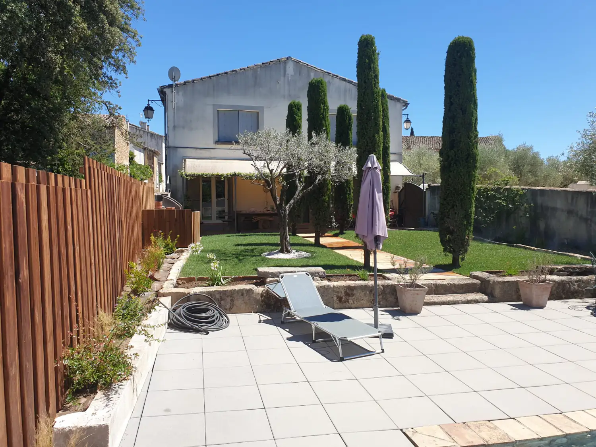

Conseils pratiques
Préparer votre devis d’entretien de jardin à Montpellier
Quelques photos et une description du besoin suffisent pour un premier échange. Pas besoin de connaître le nom de chaque plante ni de mesurer tout le jardin. Le déplacement et le devis sont gratuits.
Un passage ponctuel ou un entretien régulier ?
Commencez par ce que vous souhaitez retrouver : une pelouse tondue, une haie qui ne déborde plus, des massifs désherbés ou un jardin remis en état. Précisez si vous cherchez une intervention unique ou des passages sur l’année. Si vous hésitez, expliquez simplement ce que vous pouvez entretenir vous-même.
La page entretien de jardin présente les prestations possibles. Pour un besoin centré sur les haies ou les arbustes, consultez aussi la taille de haies et de topiaires.
Les informations utiles au premier contact
- La commune du jardin. Montpellier ou une commune des alentours ; l’adresse précise servira ensuite pour la visite.
- Les travaux souhaités. Tonte, taille de haies, débroussaillage, désherbage, feuilles à ramasser : indiquez vos priorités.
- Une idée des dimensions. Surface à tondre, longueur et hauteur approximatives de la haie. Si vous ne les connaissez pas, dites-le.
- L’état actuel. Entretien récent, végétation devenue dense ou jardin laissé de côté depuis plusieurs mois.
- L’accès. Portail, marches, pente, passage étroit et possibilité de stationner à proximité pour charger les déchets verts.
- La fréquence et la période souhaitées. Passage ponctuel ou suivi régulier, avec vos éventuelles contraintes de disponibilité.
Quelles photos envoyer ?
Une vue d’ensemble situe le jardin. Ajoutez une photo de chaque zone à reprendre, puis une vue du passage qui permet d’y accéder. Pour une haie, montrez sa longueur et ce qui se trouve à côté : mur, allée ou autre plantation.
Prenez les photos depuis le sol, sans monter pour mesurer ou photographier. Évitez les visages et les documents personnels dans le cadre. Vous pouvez les envoyer par WhatsApp ou par courriel. Elles aident à préparer l’échange, mais ne remplacent pas toujours une visite.
Ce qui fait varier le devis
La surface n’explique pas tout. La densité de la végétation, la hauteur des haies, l’accès au terrain et le volume de déchets verts à emporter changent le travail nécessaire. Une remise en état et un passage d’entretien courant ne demandent pas la même préparation.
Lors de la visite, on regarde le terrain et les priorités avec vous. Le devis détaille les travaux prévus : vérifiez les zones concernées, les finitions, l’évacuation des déchets verts et, pour un suivi régulier, la répartition des passages. Le matériel est apporté par Saint-Cyr Services.
Un message à adapter
Vous pouvez copier ce texte et remplacer les éléments entre crochets :
Bonjour Saint-Cyr, je souhaite un devis pour l’entretien de mon jardin à [commune]. Les travaux prioritaires sont [tonte, haie, désherbage…]. Je recherche [un passage ponctuel / un entretien régulier]. Le jardin représente environ [surface, si connue] et l’accès se fait par [portail, marches…]. Je joins quelques photos. Seriez-vous disponible pour en discuter et prévoir une visite ? Merci.
Et le crédit d’impôt ?
Pour l’entretien chez les particuliers, consultez les informations sur le crédit d’impôt via ACCÈS SAP. Précisez votre demande lors du devis afin de vérifier les prestations concernées et les conditions applicables à votre situation.
On regarde votre jardin ensemble ?
Un appel ou quelques photos pour commencer. Devis et déplacement gratuits, sans engagement.